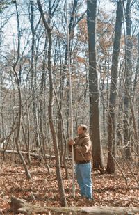

The goal of the Instrument Survey Workshop was to continue collecting field data begun in April 2005 for the making of a site topographic map of the potential Civil War Camp in the Bentley Springs area of Baltimore County, Maryland.
The Workshop was also used to review what a transit does and what Archeologists do with transits. The participants had an opportunity to try each of the necessary tasks associated with using a transit:
- Instrument set up
- Turning angles
- Reading the rod
- Establishing elevation
- Calculating distances
- Setting up control points
A Mapping Workshop, in January 2006, will complete a topographical map of the potential Civil War Site.

Georgia Nasios is looking through a one-minute transit, Gary Hall is recording the distances and elevations taken from the stadia rod cross-hairs, Charlie Hall is providing instruction, and John Hobner is in the background; during the Saturday, November 19, 2005 CAT Instrument Survey Workshop at Bee Tree Preserve in northern Baltimore County.

Mike Perrino is holding a stadia rod at Bee Tree Preserve allowing Georgia Nasios to read the cross-hairs though the one-minute transit for distances and elevations.
Photos and information provided by Stephen Israel